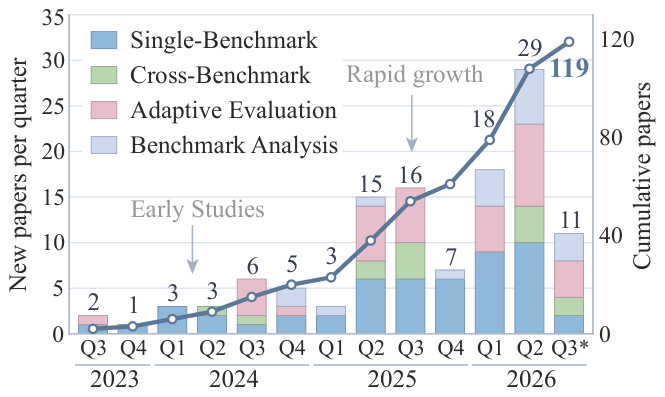

2026 · Preprint
Are We Testing Too Much? A Survey of Benchmark Compression for Efficient Evaluation of Large Language Models
arXiv:2610.18248

Overview
Surveys 119 papers on benchmark compression and organizes methods around sample selection, full-benchmark score recovery, and reliability verification.